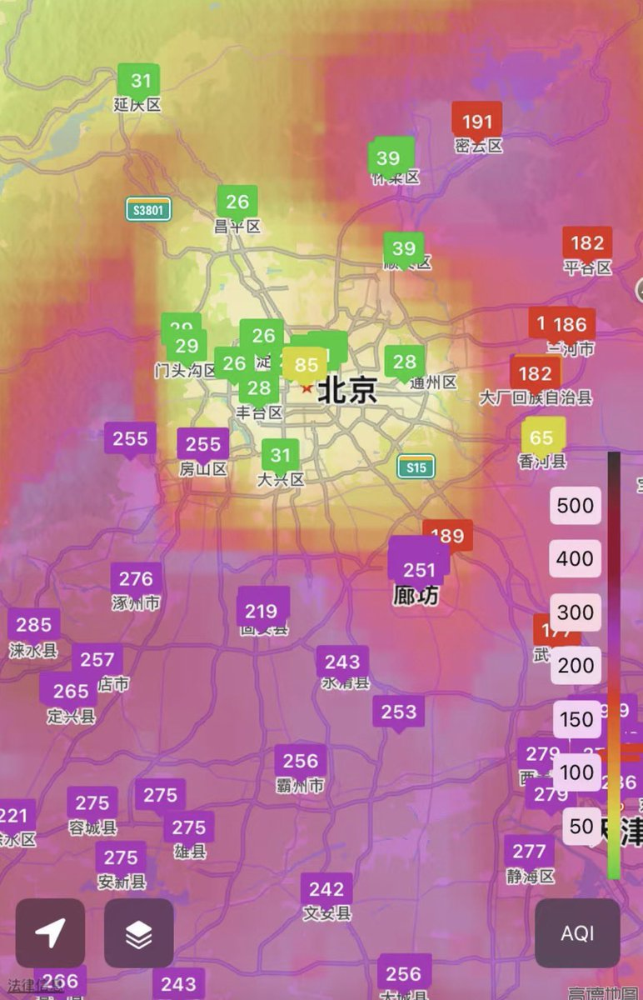
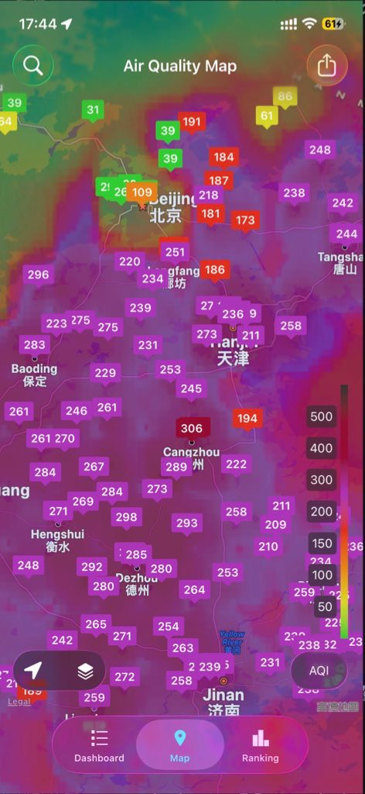
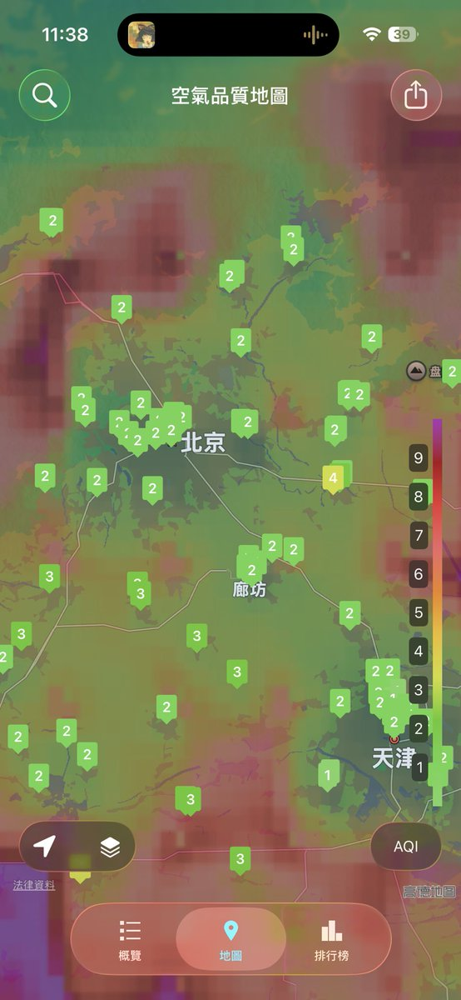

我更倾向于是在意空气app他们的数据来源出了问题，比如有关部门给出的数据是错的，或者系统里这一个方块区域的数据全部上错了。
IQ Air我记得他们通过收集客户的空气净化器传感器来验证政府给出的数据是否真实，所以我一般都用IQ Air。

IQ Air我记得他们通过收集客户的空气净化器传感器来验证政府给出的数据是否真实，所以我一般都用IQ Air。



@Haiyang331 @OnlyAppleCanDo 你接受的教育就是两个人拿出不一样的数据，就一定有个人在造谣吗？
有没有可能有关部门给的假数据？有没有可能系统出故障？有没有可能算法出问题？非得扣帽子？
前天 昨天 今天 三个时段 这个正方形都存在，哪出了问题我不管，那是有关部门干的。 https://t.co/bmuwq3iIAA
有没有可能有关部门给的假数据？有没有可能系统出故障？有没有可能算法出问题？非得扣帽子？
前天 昨天 今天 三个时段 这个正方形都存在，哪出了问题我不管，那是有关部门干的。 https://t.co/bmuwq3iIAA